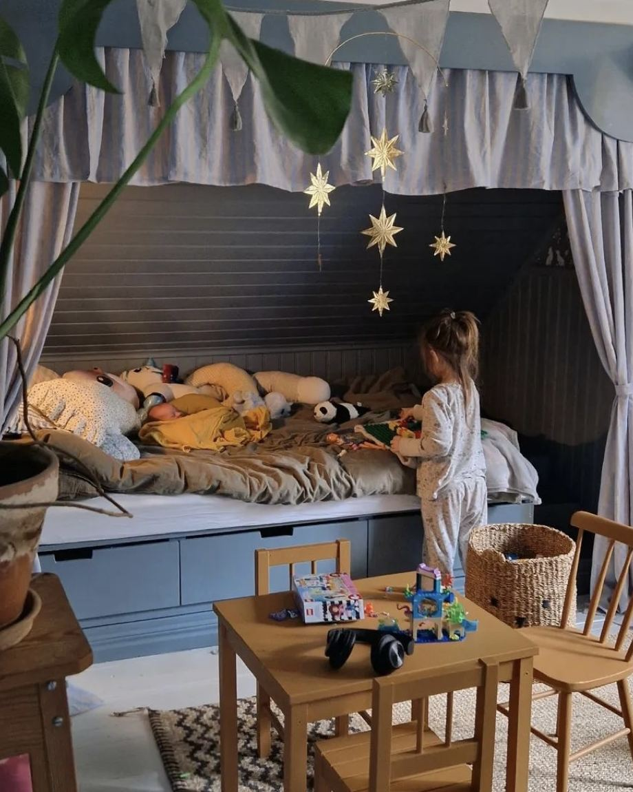
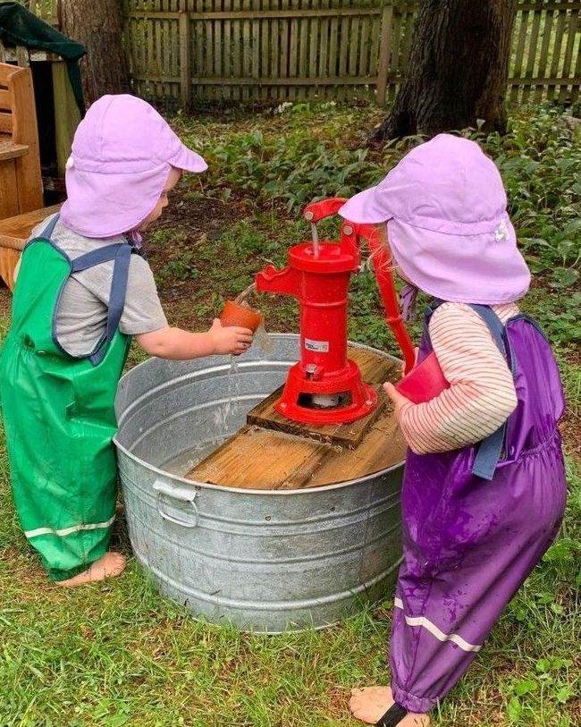
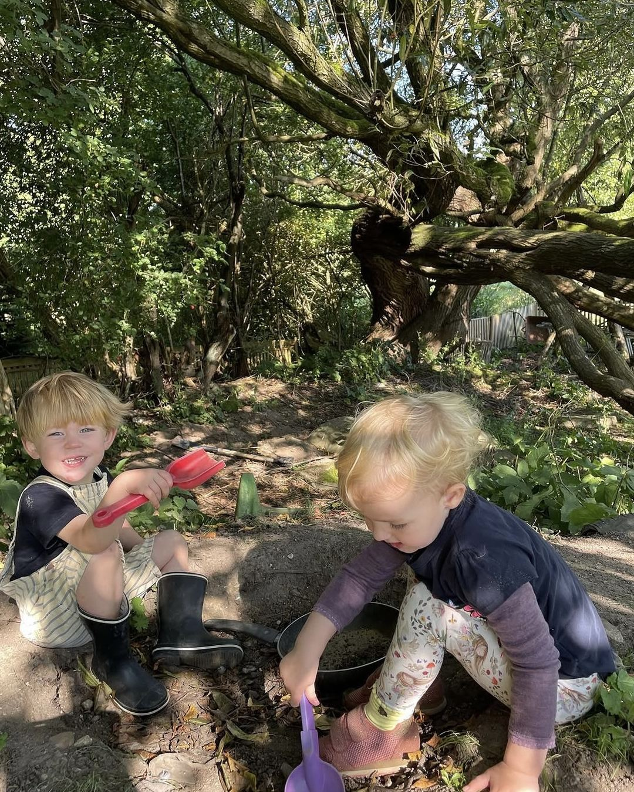

Værdier

Ro og nærvær
Jeg har brugt tid på at fordybe mig i og erfare, hvordan man som voksen møder et barn med ægte ro – hvordan man er til stede, når et barn er ked af det, glad, vred eller bare skal have et kram, uden selv at være et andet sted i tankerne.
Det betyder, at der ikke altid skal ske noget. At en stille stund med en billedbog i skødet er lige så værdifuld som en krea-dag. Og at børnene mærker en voksen, der er helt til stede – ikke en, der har travlt eller er distraheret.

Tillid og selvstændighed
Jeg arbejder ud fra en grundtanke om, at børn ikke skal underholdes hele tiden – de skal inviteres med i det rigtige liv. Når et barn hjælper med at fodre dyrene, ælte dej, dække bord eller bære en lille spand vand, er det en rigtig opgave med et rigtigt formål, og barnet mærker på egen krop, at det kan noget og betyder noget.
Den samme tillid gælder følelser: børn må mærke det hele – vrede, skuffelse, glæde – uden at blive skyndet videre eller overdynget med ros. De skal opleve, at en voksen tror på, at de selv kan finde vej igennem det, med en rolig hånd at holde i, hvis det bliver svært.

Krop, sanser og det vilde
Al den ro og alt det ansvar skal have en modvægt, og den finder vi i Mudder Klubben. Her får kroppen og sanserne frit spil: jord under neglene, vand mellem tæerne, motorikopdagelser og eventyr i en kæmpe sandkasse og på traktorture til baghaveskoven.
Det er ikke tilfældigt, at det fylder så meget. Bevægelse, motorik, sanseindtryk, kærlighed til dyr og fri leg i naturen er noget af det, der giver børn den bedste grobund – fysisk, følelsesmæssigt og socialt.
Hos os er det de tre ben, der bærer hinanden – og hele grunden til, at hverdagen i GRO ser ud, som den gør.